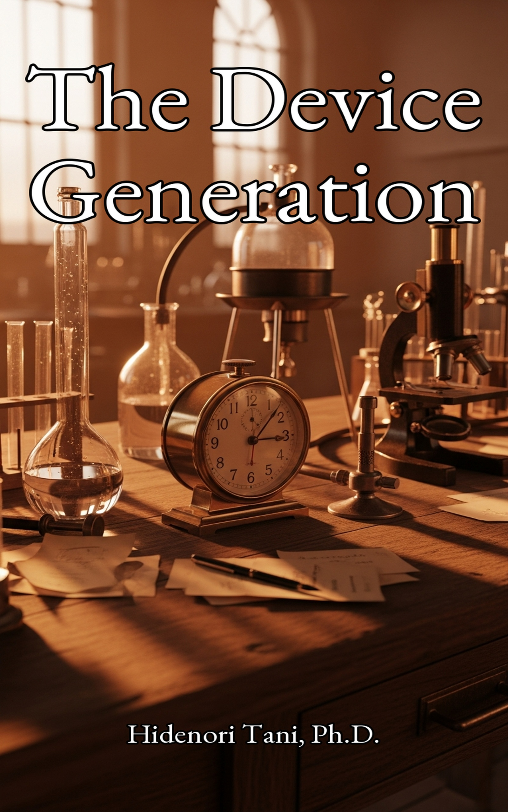

The Photographic MinDoing and BeingSystems for the SensSystems, Not Willpow SERIES 07 The Device Generation Series Systems, not willpower — a midlife survival framework for sensitive thinkers, written by a Japanese researcher who learned it the hard way. 9 books
SERIES 08 lncRNA & RNA Therapeutics Series An accessible guide to the RNA revolution — from hidden genome directives to the mRNA vaccines that ended a pandemic. 3 books
SERIES 09 AI for Researchers Series Practical AI workflows for wet-lab scientists, written by a researcher who turned ChatGPT and Claude into thinking partners. 2 books
The Beauty Molecule SERIES 10 Health & Molecular Biology Series A pharmacy professor explains the molecular biology behind everyday health — eating, beauty, and aging. 2 books
SERIES 11 Science History Series Both sides of the Nobel — the celebrated breakthroughs, and the brilliant discoveries left behind in history's shadow. 1 book